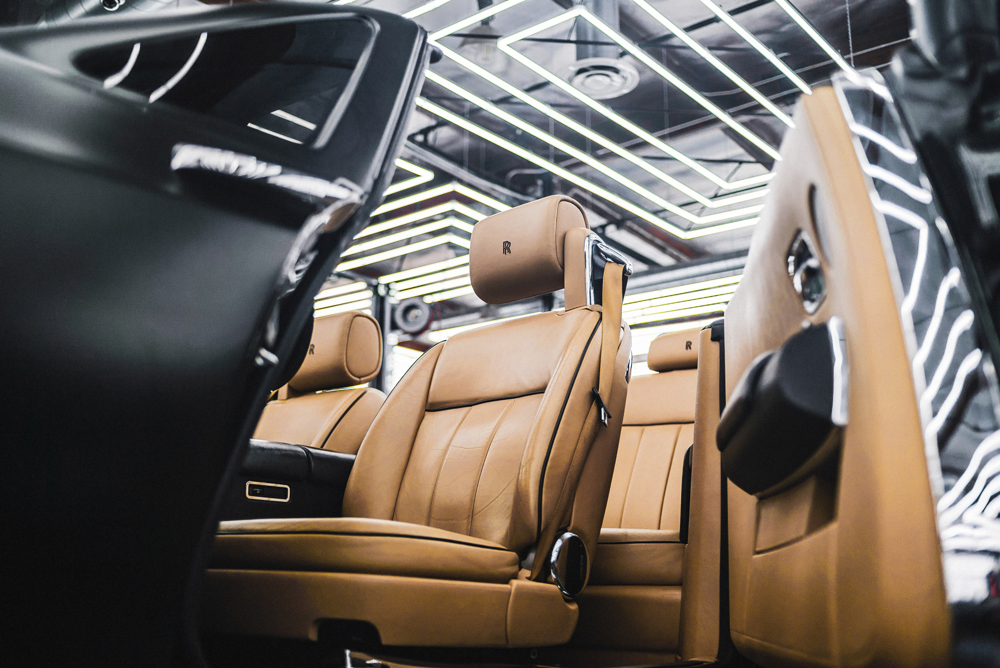
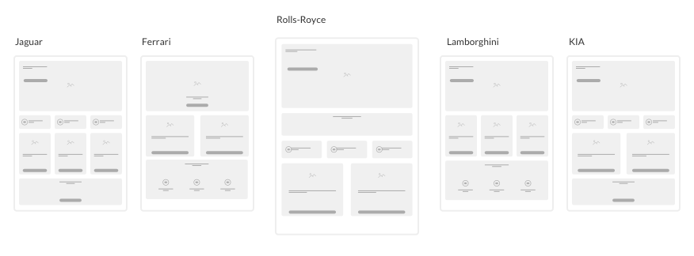
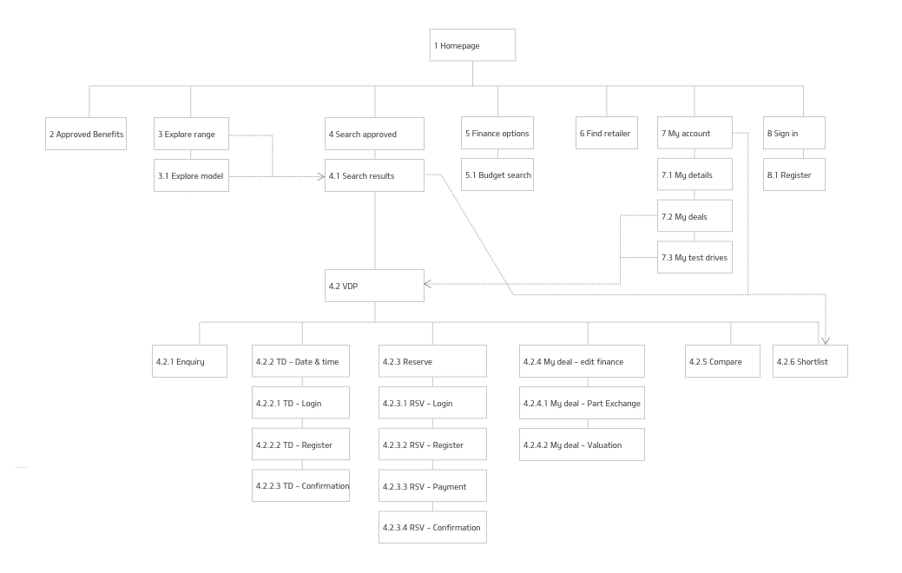
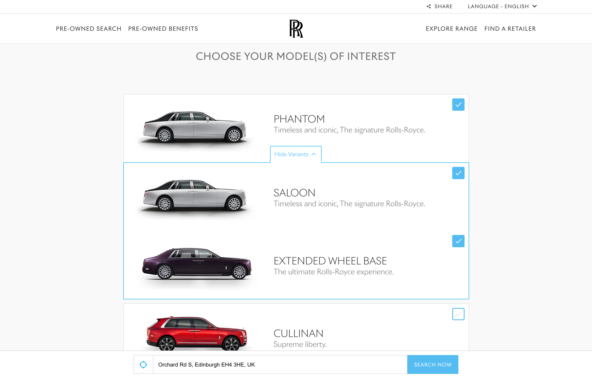
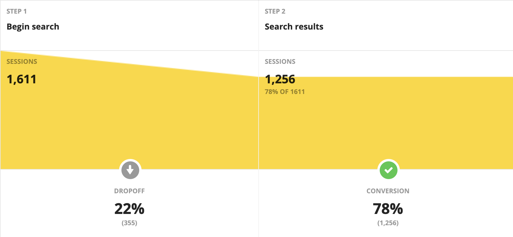
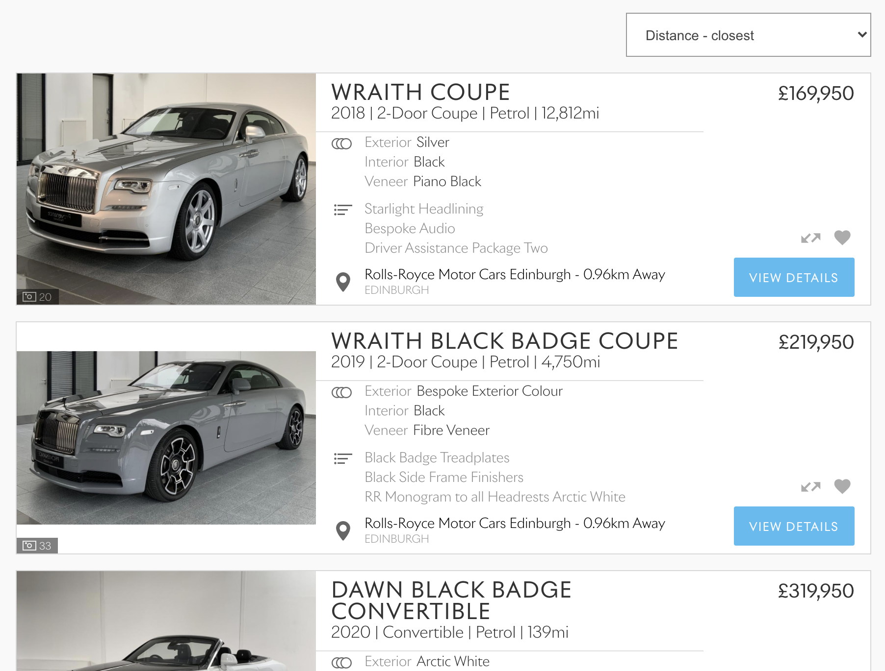
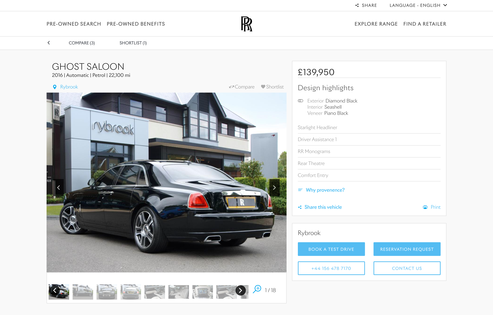

Rolls-Royce Vehicle Locator
Rolls-Royce approached Connect-Auto with a request to develop a vehicle locator that displays the pre-owned stock of approved Rolls-Royce vehicles. It should enable users to easily locate and browse the available pre-owned Rolls-Royce alongside comprehensive information about each vehicle, including its model, year, mileage, and condition.
The project aims to achieve multiple goals. First, it intends to boost sales through the dealer networks by preventing customers from buying from third-party sources. Second, it aims to encourage a returning user base to promote brand loyalty. To achieve this, the focus will be transactional, ultimately removing negotiations with dealers from the equation. However, the project also recognizes the importance of dealer acceptance and intends to support the network through this change by integrating with inventory systems. Additionally, the project aims to provide a mobile-first experience to ensure accessibility and convenience for users. By pursuing these goals, the project aims to increase sales, build brand loyalty, streamline the purchasing process, and support its dealer network.
Understanding the customer
From user workshops with the client, we set out to understand the type of customers that Rolls-Royce would target with their pre-owned locator. We were able to identify three customers:
1. This customer is driven by in-depth technical information is best converted by displaying information in an easy to digest format, with explanatory videos, imagery and diagrams. The ability to then compare against other models or even the competition helps them to make their mind up more quickly.
2. A customer that is passionate about the brand but is not confident on its affordability can be taken through the site with a focus on monthly payments, strong residual values, low cost of ownership and a hassle-free purchase experience to provide the necessary peace of mind.
3. Existing customers already understand the Rolls-Royce ethos so allowing them to see the differences between their existing car and the one on their shortlist helps to generate the perceived value in the new car, and removes the financial barrier to purchase.
Approved Vehicle Locators, as a platform, had been integral to Connect-Auto's offering for some time. For this reason, a lot of development work was achieved using a custom built CMS with prebuilt templates. Due to this, every module and template included restraints. A design challenge was in making RRMC feel bespoke despite these constraints.
Model select page
Global Locator: The site needed the users location before displaying vehicles. An inline field was seen as the best way to stop users from dropping off.
Nearly 80% of users make it to the next page. This could probably be improved on- but with privacy sensitive users, it will always be a challenge.
Checkboxes: Checking a box will auto-expand the options below. Unticking from within these displays an icon change.
Vehicle search results
Default sort order: Vehicles were sorted by distance for usability within a global locator.
Design features: It was important that the customer could see at a glance what made each vehicle unique. In the absence of financing info, the vehicle tiles had space to display these key features.
Shortlist & compare: Encourages returning users, these features would save for each session.
Vehicle details page
Image carousel: Images on VDPs are proven to be the most engaged with feature (RRMC - 60% of all recorded clicks are on the image carousel). Their size & prominence on the page reflects this.
Provenance anchor: “Why provenance?” scrolls the user to the foot of the page to read up about the benefits of choosing to buy with Rolls-Royce.
Findings and results
• Provenance benefits given a hierarchy on the site to hopefully tackle third-party sales. • Returning visitors at around 20%, a reasonable result to suggest brand loyalty. • Transactions were not as successful. Enquiry forms show a very low conversion rate and is something to be improved on for the next major release • Dealer acceptance has been good. Response from RRMC has been positive and has led to dealers noticing improvements to be made and forwarding these requests on.